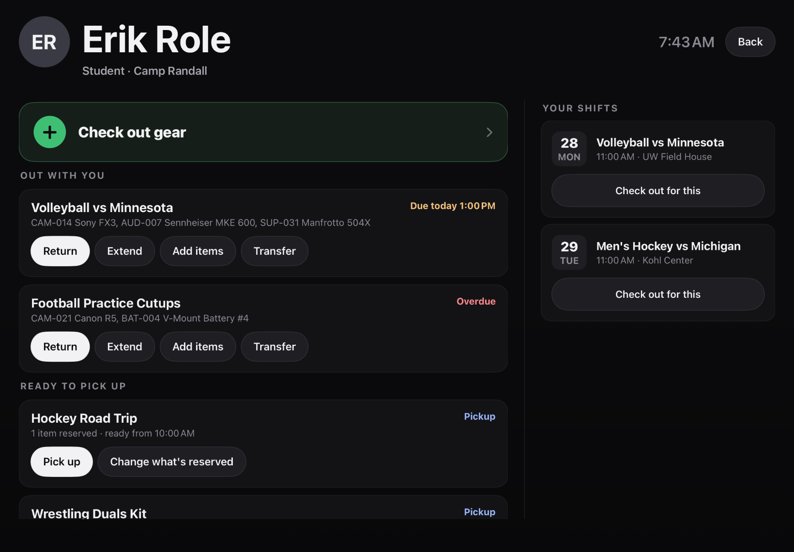
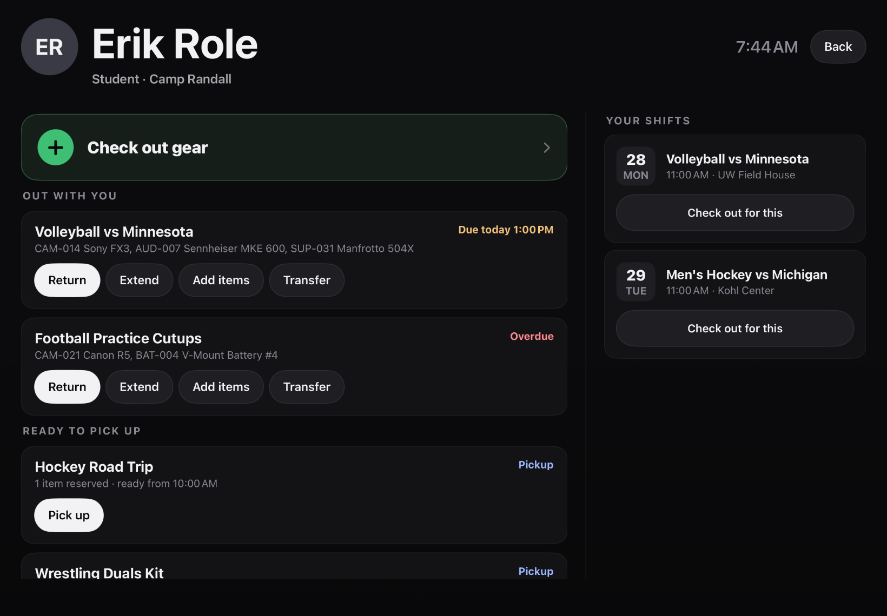
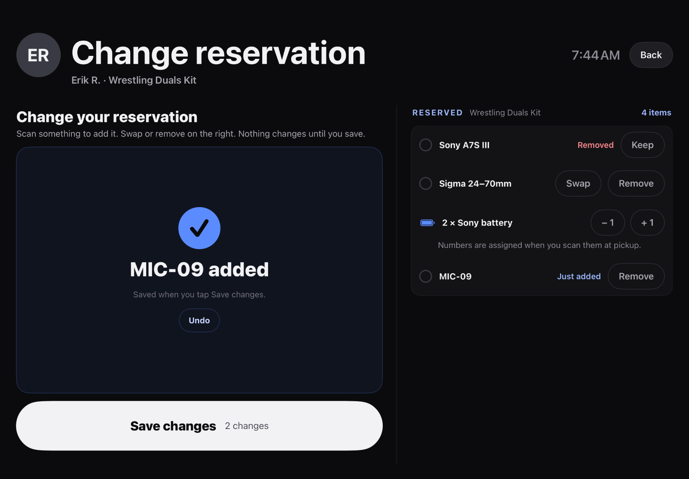

Kiosk redesign · slice hub-pickup-kind · 2026-09-28
"Change what's reserved" only on reservations
The student hub route now tags each pickup with kind (reservation or checkout). A pickup that is already a checkout (legacy PENDING_PICKUP) no longer offers "Change what's reserved", so nobody reaches the old "can't be changed here" dead end. Older servers that omit kind keep the current behavior (button shown).
Fixture: the hub now has a checkout-kind pickup (Hockey Road Trip, CO-1044) before the reservation pickup. The BEFORE app was built from HEAD with the same fixture data (no kind handling).
C2 hub: Ready to pick up


H5 Change reservation (unchanged, regression check)


Unverified: live-server payload on a real PENDING_PICKUP booking.